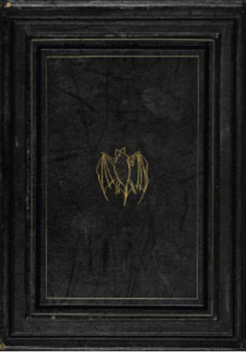

|  |
O jovem advogado inglês Jonathan Harker é enviado por seu patrão à Transilvânia, no leste da Europa, para atender um misterioso cliente. Ao chegar, descobre que seu anfitrião é, na realidade, um poderoso vampiro: o conde Drácula. Consegue então fugir para a Inglaterra. Lá, ao lado de sua noiva, Mina, e do Professor Van Helsing, Jonathan travará uma batalha de vida e morte contra o poder maligno de Drácula. Adaptação de Fiona Macdonald do Drácula, de Bram Stoker, a mais célebre e aterrorizante história de vampiros de todos os tempos. |